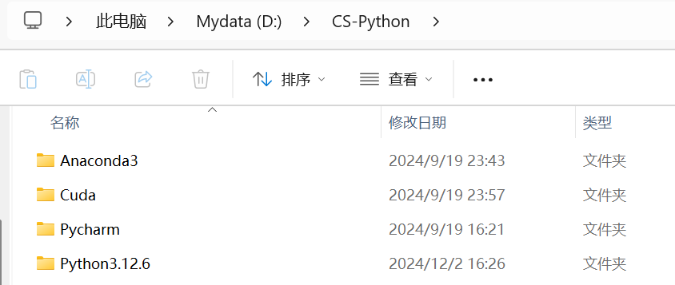

简介
Anaconda的详细介绍可以自行百度→点击跳转，这里说一下我的理解，我们在做实验 的过程中，会下载很多不同的工程，每个工程所用到的Pytorch，工具包等的版本都是不一样的，为了避免每次下载一个工程都需要把前面的工程安装的工具包等卸载这一问题， 就可以下载Anaconda，它可以创建和管理多个不同的环境，每个环境中可以安装特定的Pytorch版本和特定的工具包版本等等。可以举一个不怎么合理的例子，在没有装 Anaconda之前，你的电脑就只有1间房子，每次只能住（安装）一个人（环境），现在住了A，B要入住就需要把A赶走（删除），在安装Anaconda之后，这一间房子直接变成了一个大酒店，可以同时 住A、B、C等很多人，我们也可以方便地管理不同的人。
教程
① 官方下载地址：“https://www.anaconda.com/” → 点击跳转，官网下载速度很慢， 这里推荐使用清华镜像下载→ 点击跳转，根据自己电脑的系统和配置进行选择
② 这里建议把它下在D盘，因为一个环境通常很大，放在C盘很容易报红（亲身经历），可以把Anoconda、Cuda、Pycharm、Python放在D盘的一个文件夹下，方便管理,
这里放一张我的安装地址：

③ 下载好后，打开Anaconda Prompt，会显示默认的环境叫做“base"，你可以再创建不同的虚拟环境，并管理它们
④ 这样，你可以为不同的工程配置不同的虚拟环境，并在不同的虚拟环境下下载不同版本的Pytorch，工具包等
⑤ 关于虚拟环境的创建与管理，可以参考我的另一篇教程，→ 点击跳转，但是通常，一个工程的readme页面中会有快速配置 这个工程环境的指令，只需要运行就好
⑥ 更加详细的安装和使用教程，可以参考腾讯云的这一篇教程：→ 点击跳转
简介
Cuda的详细介绍可以自行百度→点击跳转，具体是干啥 的我也没怎么了解过，只需要知道安装了Cuda，在学习深度学习时候就可以使用Cuda版本的Pytorch，也就是可以用GPU进行训练（没有Cuda，只能用CPU进行训练）， 会极大地提高训练速度。
教程
① 官方下载地址：“https://developer.nvidia.com/rdp/cudnn-archive” → 点击跳转，根据 自己的电脑版本和系统进行选择，如果不确定下载哪一个，可以打开Cmd，输入“nvidia-smi”，把得到的你的电脑信息发给AI，让它告诉你该下载哪一个！
② 更详细的安装教程，可以参考CSDN的这一篇教程：→ 点击跳转